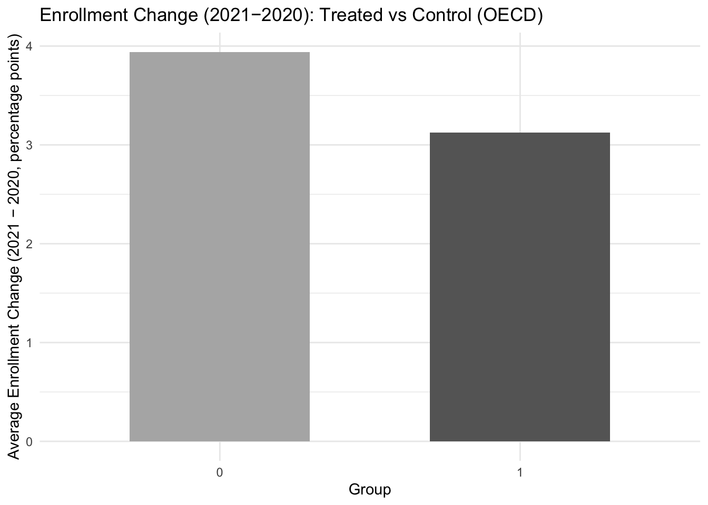
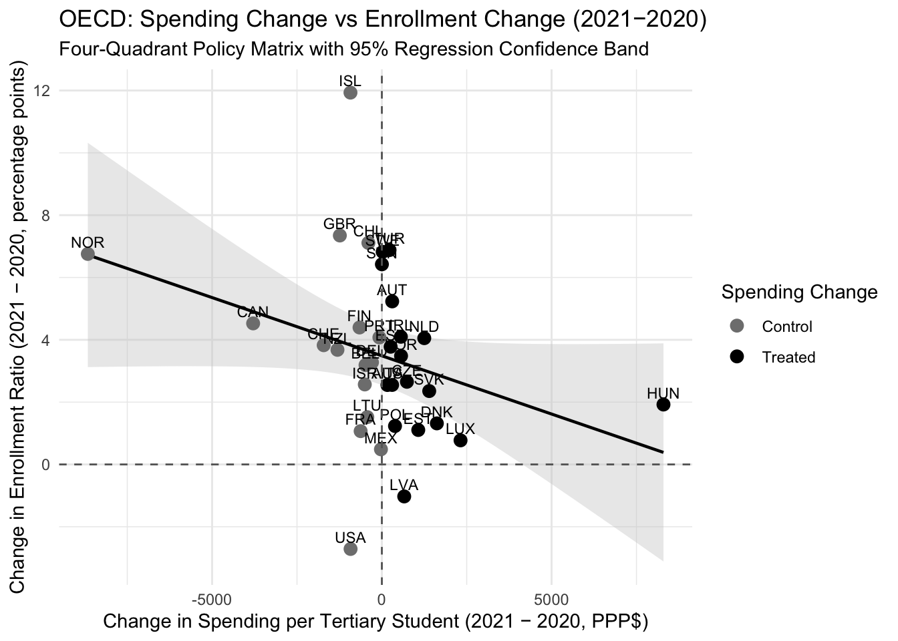

library(tidyverse)── Attaching core tidyverse packages ──────────────────────── tidyverse 2.0.0 ──
✔ dplyr 1.1.4 ✔ readr 2.1.5
✔ forcats 1.0.0 ✔ stringr 1.5.2
✔ ggplot2 4.0.0 ✔ tibble 3.3.0
✔ lubridate 1.9.4 ✔ tidyr 1.3.1
✔ purrr 1.1.0
── Conflicts ────────────────────────────────────────── tidyverse_conflicts() ──
✖ dplyr::filter() masks stats::filter()
✖ dplyr::lag() masks stats::lag()
ℹ Use the conflicted package (<http://conflicted.r-lib.org/>) to force all conflicts to become errorslibrary(fixest)
# 1. Load data ------------------------------------------------------------
enroll_raw <- read.csv(
"https://ourworldindata.org/grapher/primary-secondary-enrollment-completion-rates.csv?v=1&csvType=full&useColumnShortNames=true"
)
spend_raw <- read.csv(
"https://ourworldindata.org/grapher/education-spending.csv?v=1&csvType=full&useColumnShortNames=true&spending_type=per_student&level=tertiary"
)
# OECD ISO3 codes
oecd_iso3 <- c(
"AUS","AUT","BEL","CAN","CHE","CHL","CZE","DEU","DNK","ESP","EST",
"FIN","FRA","GBR","GRC","HUN","IRL","ISL","ISR","ITA","JPN","KOR",
"LTU","LUX","LVA","MEX","NLD","NOR","NZL","POL","PRT","SVK","SVN",
"SWE","TUR","USA"
)
# 2. Select variables (using your exact column names) ---------------------
enroll <- enroll_raw %>%
transmute(
entity = Entity,
code = Code,
year = Year,
enroll_ratio =
gross_enrolment_ratio_for_tertiary_education__both_sexes__pct__ger_5t8
)
spend <- spend_raw %>%
transmute(
entity = Entity,
code = Code,
year = Year,
spend_tertiary =
initial_government_funding_per_tertiary_student__constant_pppdollar__xunit_pppconst_5t8_fsgov_ffntr
)
# 3. Build panel for multiple years (for DiD) -----------------------------
panel_all <- enroll %>%
filter(code %in% oecd_iso3) %>%
inner_join(
spend %>% filter(code %in% oecd_iso3),
by = c("entity","code","year")
) %>%
filter(year >= 2010, year <= 2023) %>%
arrange(code, year)
# 4. Compute 2021–2020 differences and treatment -------------------------
panel_20_21 <- panel_all %>%
filter(year %in% c(2020, 2021)) %>%
select(code, entity, year, enroll_ratio, spend_tertiary) %>%
pivot_wider(
names_from = year,
values_from = c(enroll_ratio, spend_tertiary),
names_glue = "{.value}_{year}"
) %>%
mutate(
enroll_change = enroll_ratio_2021 - enroll_ratio_2020,
spend_change = spend_tertiary_2021 - spend_tertiary_2020,
treated = ifelse(spend_change > 0, 1, 0)
)
# 5. Summary + bar chart: treated vs control + ATE -----------------------
summary_table <- panel_20_21 %>%
group_by(treated) %>%
summarise(
avg_enroll_change = mean(enroll_change, na.rm = TRUE),
avg_spend_change = mean(spend_change, na.rm = TRUE),
n_countries = n(),
.groups = "drop"
)
print(summary_table)# A tibble: 2 × 4
treated avg_enroll_change avg_spend_change n_countries
<dbl> <dbl> <dbl> <int>
1 0 3.94 -1378. 16
2 1 3.12 1119. 18# Average Treatment Effect (ATE): difference in mean enrollment change
ATE <- summary_table$avg_enroll_change[summary_table$treated == 1] -
summary_table$avg_enroll_change[summary_table$treated == 0]
ATE[1] -0.8175778# Bar chart of average enrollment change by group
ggplot(summary_table,
aes(x = factor(treated),
y = avg_enroll_change,
fill = factor(treated))) +
geom_col(width = 0.6) +
scale_fill_manual(values = c("0" = "gray70", "1" = "gray40"),
labels = c("0" = "Control", "1" = "Treated")) +
labs(
x = "Group",
y = "Average Enrollment Change (2021 − 2020, percentage points)",
title = "Enrollment Change (2021−2020): Treated vs Control (OECD)"
) +
theme_minimal() +
theme(legend.position = "none")
# 6. 4-Quadrant Scatter: ΔSpend vs ΔEnroll with regression & CI ----------
p_quad <- ggplot(panel_20_21,
aes(x = spend_change, y = enroll_change)) +
# Regression line + 95% CI
geom_smooth(method = "lm", se = TRUE,
color = "black", fill = "gray80", linewidth = 0.8) +
# Points
geom_point(aes(color = factor(treated)), size = 3) +
# Labels
geom_text(aes(label = code), vjust = -0.6, size = 3) +
# Quadrant lines
geom_hline(yintercept = 0, linetype = "dashed", color = "gray40") +
geom_vline(xintercept = 0, linetype = "dashed", color = "gray40") +
scale_color_manual(
values = c("0" = "gray50", "1" = "black"),
labels = c("0" = "Control", "1" = "Treated"),
name = "Spending Change"
) +
labs(
x = "Change in Spending per Tertiary Student (2021 − 2020, PPP$)",
y = "Change in Enrollment Ratio (2021 − 2020, percentage points)",
title = "OECD: Spending Change vs Enrollment Change (2021−2020)",
subtitle = "Four-Quadrant Policy Matrix with 95% Regression Confidence Band"
) +
theme_minimal()
p_quad`geom_smooth()` using formula = 'y ~ x'
# 7. Regression using 2021–2020 differences -------------------------------
# (a) Simple OLS: does higher spending change predict higher enrollment change?
reg_diff <- lm(enroll_change ~ spend_change, data = panel_20_21)
summary(reg_diff)
Call:
lm(formula = enroll_change ~ spend_change, data = panel_20_21)
Residuals:
Min 1Q Median 3Q Max
-6.5432 -1.4489 -0.3097 0.9801 8.1008
Coefficients:
Estimate Std. Error t value Pr(>|t|)
(Intercept) 3.4862637 0.4594718 7.588 1.21e-08 ***
spend_change -0.0003737 0.0001983 -1.885 0.0685 .
---
Signif. codes: 0 '***' 0.001 '**' 0.01 '*' 0.05 '.' 0.1 ' ' 1
Residual standard error: 2.678 on 32 degrees of freedom
Multiple R-squared: 0.09994, Adjusted R-squared: 0.07182
F-statistic: 3.553 on 1 and 32 DF, p-value: 0.06854# (b) Simple treatment regression: treated vs control (difference in means regression)
reg_treat <- lm(enroll_change ~ treated, data = panel_20_21)
summary(reg_treat)
Call:
lm(formula = enroll_change ~ treated, data = panel_20_21)
Residuals:
Min 1Q Median 3Q Max
-6.6526 -1.6966 -0.3659 0.9637 7.9926
Coefficients:
Estimate Std. Error t value Pr(>|t|)
(Intercept) 3.9400 0.6979 5.645 3.04e-06 ***
treated -0.8176 0.9592 -0.852 0.4
---
Signif. codes: 0 '***' 0.001 '**' 0.01 '*' 0.05 '.' 0.1 ' ' 1
Residual standard error: 2.792 on 32 degrees of freedom
Multiple R-squared: 0.0222, Adjusted R-squared: -0.008356
F-statistic: 0.7265 on 1 and 32 DF, p-value: 0.4003# Optional t-test for treated vs control
t_test_res <- t.test(enroll_change ~ treated, data = panel_20_21)
t_test_res
Welch Two Sample t-test
data: enroll_change by treated
t = 0.83212, df = 25.44, p-value = 0.4131
alternative hypothesis: true difference in means between group 0 and group 1 is not equal to 0
95 percent confidence interval:
-1.204196 2.839351
sample estimates:
mean in group 0 mean in group 1
3.940035 3.122457 # 8. Full DiD model (panel, multi-year) -----------------------------------
# Define treatment at country level based on 2021−2020 spend_change
treatment_def <- panel_20_21 %>%
select(code, entity, spend_change, treated)
# Merge treatment into full panel and define post dummy for 2021+
panel_did <- panel_all %>%
left_join(treatment_def %>% select(code, treated), by = "code") %>%
filter(!is.na(treated)) %>%
mutate(
post = ifelse(year >= 2021, 1, 0),
treat_post = treated * post
)
# DiD model using enrollment LEVEL as outcome:
# enroll_ratio_ct = α + β (treated_c * post_t) + γ_c + δ_t + ε_ct
did_model <- feols(
enroll_ratio ~ treated * post | code + year,
data = panel_did,
cluster = "code"
)NOTES: 5 observations removed because of NA values (LHS: 5).
0/1 fixed-effect singleton was removed (1 observation).
The variables 'treated' and 'post' have been removed because of collinearity
(see $collin.var).summary(did_model)OLS estimation, Dep. Var.: enroll_ratio
Observations: 352
Fixed-effects: code: 34, year: 12
Standard-errors: Clustered (code)
Estimate Std. Error t value Pr(>|t|)
treated:post -0.736659 2.35326 -0.313038 0.75622
... 2 variables were removed because of collinearity (treated and post)
---
Signif. codes: 0 '***' 0.001 '**' 0.01 '*' 0.05 '.' 0.1 ' ' 1
RMSE: 5.37807 Adj. R2: 0.877434
Within R2: 4.007e-4# Extract DiD estimate for your report
beta_hat <- coef(did_model)["treated:post"]
se_hat <- se(did_model)["treated:post"]
ci_hat <- confint(did_model, "treated:post")
beta_hattreated:post
-0.7366592 se_hattreated:post
2.353257 ci_hat 2.5 % 97.5 %
treated:post -5.524398 4.051079